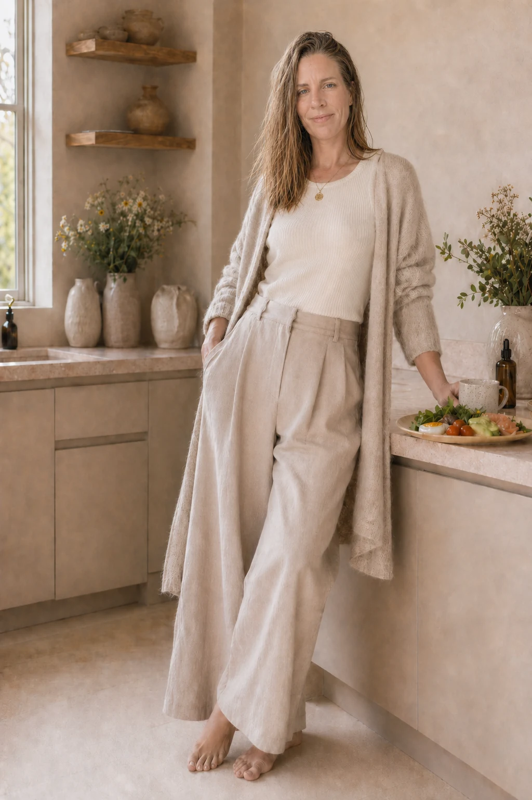
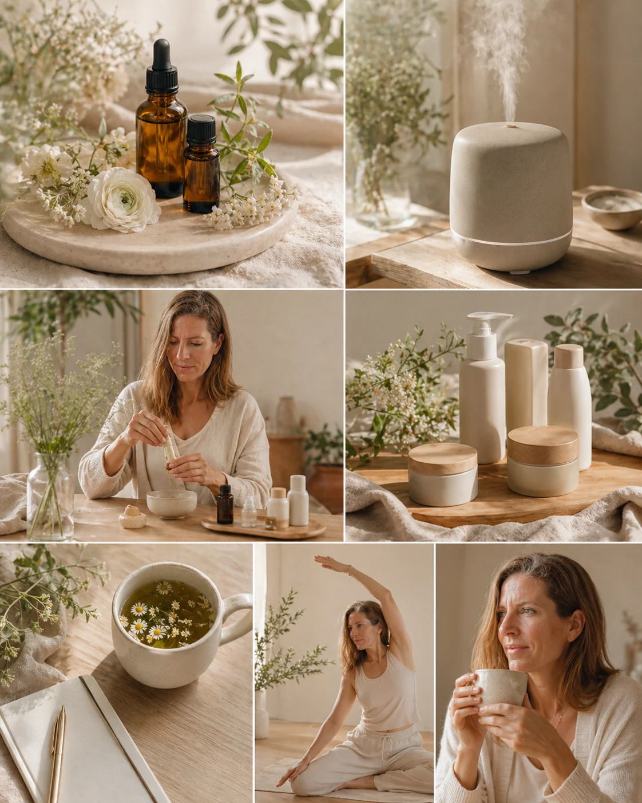

Claridad y estrategia
Ordenamos síntomas, hábitos, etapa vital y prioridades para saber qué necesita tu cuerpo ahora.
Nutrición hormonal y salud femenina
Te acompaño a entender las señales de tu cuerpo, reducir inflamación y construir una forma de cuidarte que encaje con tu estado hormonal, tu energía y tu vida real.

Así te puedo ayudar
Ordenamos síntomas, hábitos, etapa vital y prioridades para saber qué necesita tu cuerpo ahora.
Creamos rutinas nutricionales, low-tox y de descanso que puedas sostener sin vivir con rigidez.
Avanzamos con seguimiento de síntomas, hábitos y medición de biomarcadores.
Sobre mí
Mi trabajo nace de una idea sencilla: una mujer no necesita más ruido, necesita entender qué está pasando en su cuerpo y qué paso tiene sentido dar primero.
Integro nutrición hormonal, salud digestiva, enfoque antiinflamatorio, reducción de tóxicos, seguimiento de síntomas y medición de biomarcadores.
Conoce tu punto de partida →Servicios
Trabajo contigo desde la raíz: lo que comes, lo que absorbes, lo que te inflama, lo que te estresa y lo que tu etapa hormonal necesita.

Ciclo, perimenopausia, energía, antojos, sueño, piel, ánimo y cambios que no quieres normalizar.
Digestión, hinchazón, pesadez, dolor, inflamación y hábitos alimentarios adaptados a tu realidad.
Reducción de tóxicos, rutinas de apoyo, aceites esenciales, seguimiento de síntomas y medición de biomarcadores.
Lo que busco para ti
“Que dejes de sentir que tu cuerpo va por libre y puedas volver a habitarlo con claridad, calma y confianza.”— Mónica Luque
Primer paso
Haz la valoración inicial y descubre si una sesión de claridad gratuita conmigo es el siguiente paso para ordenar tu caso y empezar con dirección.
Agendar sesión de claridad